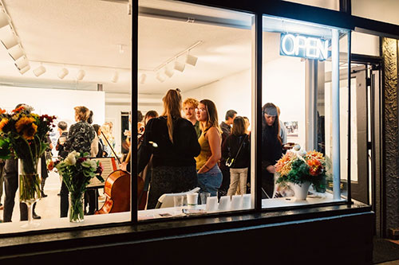
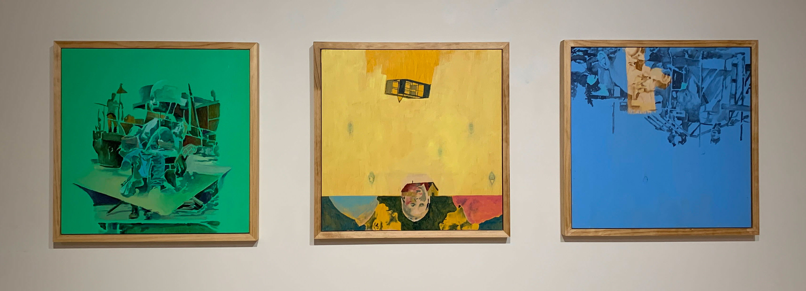
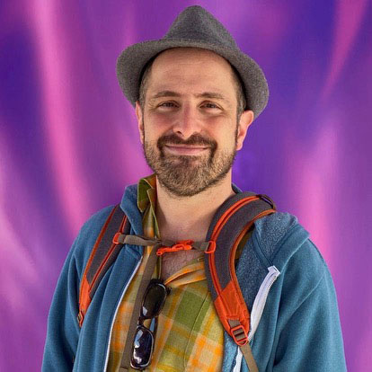
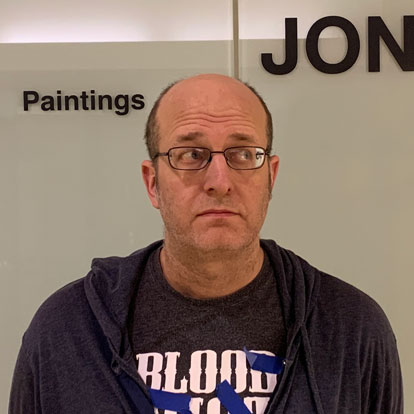

Viewpoint Gallery • Apr 19 – 27, 2024
The physical exhibition has ended, check out the virtual gallery
For more information, see the Exhibits page

A Wake in the Current is the result of a collaboration between writer Kyle Feldman and visual artist Jon Reischl that began amidst the uncertainty and anxiousness of pandemic isolation and has continued sporadically over the months and years that followed.

The collaboration began independently, with Feldman writing a single poem and Reischl making a single painting, both working from sources of inspiration unknown to the other. After sharing what they'd done with each other, they each created a second piece in their respective medium, prompted by what the other had done. And those pieces prompted the next round and so on. They continued working this way for weeks before stepping back to look at what they'd done so far.
In contrast to the more traditional relationship between text and image—where either the former describes the latter or the latter illustrates the former unidirectionally—their goal was to create a more holistic body of work that was in conversation with itself, while remaining two distinct voices. Through this ecosytem of interconnectedness, each piece, whether poem or painting, was connected to at least two others: the one that prompted it and the one it prompted. Working in this manner, the artists hoped to foster a wider breadth of interpretation from their audience, allowing viewers to draw their own connections on top of the ones that already exist.
Kyle Feldman reads his poem "Without Meaning Too" while Jon Reischl creates a eucalyptus oil transfer from a photomontage to promote their exhibition A Wake in the Current, opening April 19 , 2024 at Viewpoint Gallery in Saint Paul, Minnesota. In homage to Hollis Frampton, whose 1971 short film "(nostalgia)" was a catalyzing inspiration for "A Wake in the Current".


Kyle Feldman is a writer based in Minneapolis, Minnesota. He believes in the power of words as divine vibrational energy to heal and transform our inner and outer worlds; even subtle changes in the way we think can manifest powerful new realities. He mostly writes in drips and drizzles, often while dancing or hiking, and then collages it altogether another time. He lives with a superb cat named Rajah Federer, enjoys too many blessings to count, and tries to help other people everyday. This is his first poetry project.
Jon Reischl is a visual artist and designer specializing in mixed-media and oil painting. He has shown work locally in the Twin Cities and the greater metro area as well as regionally at venues throughout the midwest. Most recently, he completed a four month residency/retrospective occupying the main floor galleries at TractorWorks in Minneapolis.
He graduated from St. Paul’s College of Visual Arts (RIP), with a Bachelor of Fine Arts degree. After college, he co-founded Rock9 Art Studio, with fellow CVA alumni Jeremy Szopinski and Ed Charbonneu. Rock9 Art Studio is located in a warehouse in the heart of St. Paul’s Creative Enterprise Zone.
He lives on the east side of St. Paul with his lovely wife Debra and their trusty beagle.